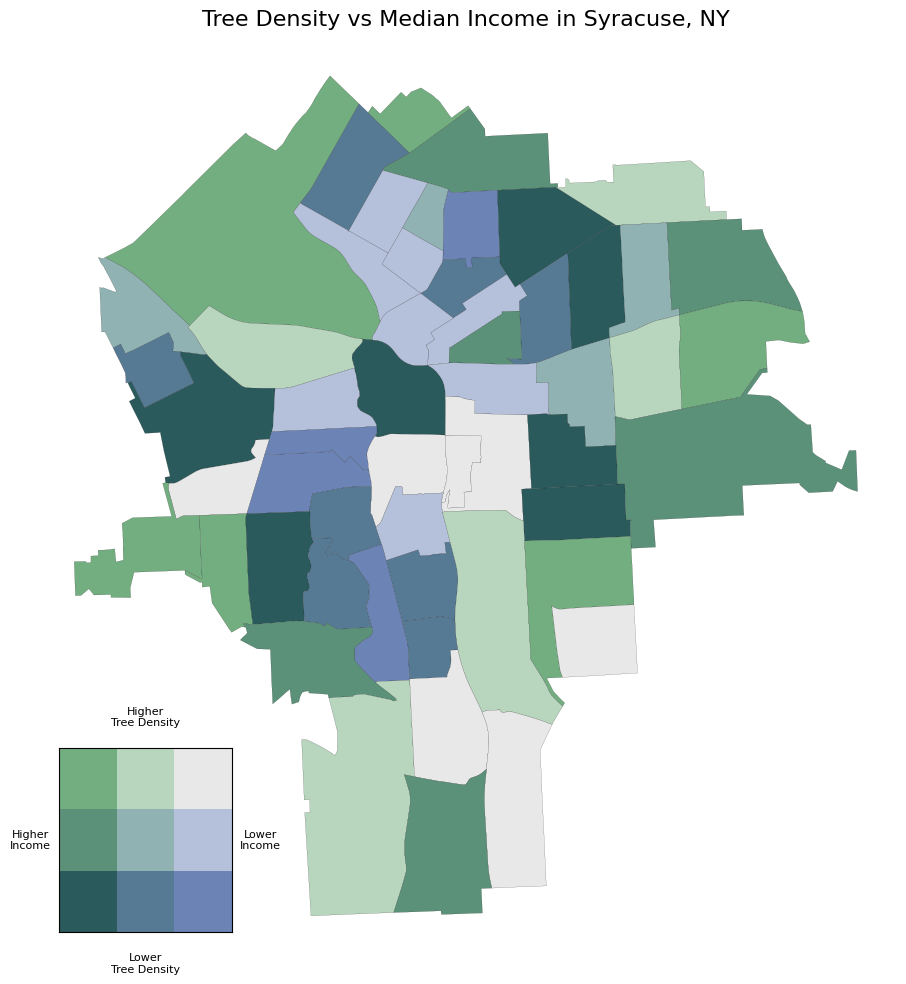

<!--Meta--> 
<meta charset="UTF-8"> 
<meta name="viewport" content="width=device-width, initial-scale=1.0">
<title>GIS Portfolio</title>

<!--Header Style-->
<style>
  body {
    font-family: 'Inter', sans-serif;
    background-color: #f4f4f9;
    margin: 0;
    padding: 0;
  }

  header {
    background-color: #ab91b8;
    padding: 2em 1em;
    color: white;
    text-align: center;
    border-radius: 0 0 12px 12px;
    box-shadow: 0 4px 10px rgba(0,0,0,0.1);
  }

  header h1 {
    margin: 0;
    font-size: 2.5em;
    font-weight: 600;
  }

  nav {
    margin-top: 1em;
  }

  nav a {
    color: white;
    text-decoration: none;
    margin: 0 12px;
    font-weight: 600;
    font-size: 1.05em;
    padding: 6px 10px;
    border-radius: 6px;
    transition: background-color 0.3s ease, color 0.3s ease;
  }

  nav a:hover {
    background-color: rgba(255, 255, 255, 0.2);
    color: #fff;
  }

  /* Toggle hidden */
  .hidden { display: none; }

  /* Code block style */
  pre code {
    display: block;
    background: #1e1e1e;
    color: #dcdcdc;
    font-family: "Fira Code", monospace;
    font-size: 0.9em;
    padding: 1em;
    border-radius: 8px;
    overflow-x: auto;
    line-height: 1.5em;
    white-space: pre;
  }
</style>

<!--Header-->
<header>
  <h1>Jena Klimaszewski</h1>
  <nav>
    <a href="index.html">About Me</a>
    <a href="Resume.html">Resume</a>
    <a href="GISPortfolio.html">GIS Portfolio</a>
    <a href="writingsamples.html">Writing Samples</a>
  </nav>
</header> 

<section style="max-width: 1100px; margin: 3em auto; padding: 2em;">
  <h2 style="text-align: center; font-size: 2.2em; color: #b0355b; margin-bottom: 2em;">GIS Portfolio</h2>

  <!-- Python Syracuse Tree Density and Income Analysis -->
  <div style="display: flex; flex-wrap: wrap; gap: 2em; margin-bottom: 3em; align-items: center;">
    <a href="Images/syrtreedens_map.png" target="_blank">
      
    </a>
    <div style="flex: 2;">
      <h3>Syracuse Tree Density and Income</h3>
      <p>This project explored the relationship between urban greenery and socioeconomic status in Syracuse, NY. Using Python with GeoPandas and Census data, I created a bivariate choropleth map that compares tree 
      density with median household income at the census tract level. The visualization highlights areas where low-income neighborhoods also have fewer trees, raising questions about equity and environmental justice 
      in city planning.</p>

      <!-- Code Snippet Button -->
      <button onclick="document.getElementById('python-snippet').classList.toggle('hidden')" 
              style="margin-top: 1em; padding: 0.5em 1em; border: none; background-color: #4a90e2; color: white; border-radius: 6px; cursor: pointer;">
        Show Python Code Snippet
      </button>

      <!-- Python Code Snippet -->
      <pre id="python-snippet" class="hidden"><code>tracts_full['income_quantile'] = pd.qcut(tracts_full['B19013_001E'], q=3, labels=[1,2,3])
tracts_full['tree_quantile'] = pd.qcut(tracts_full['tree_density'], q=3, labels=[1,2,3])
tracts_full['bivariate_class'] = tracts_full['income_quantile'].astype(str) + "-" + tracts_full['tree_quantile'].astype(str)

bivariate_colors = {
    '1-1': '#e8e8e8', '1-2': '#b5c0da', '1-3': '#6c83b5',
    '2-1': '#b8d6be', '2-2': '#90b2b3', '2-3': '#567994',
    '3-1': '#73ae80', '3-2': '#5a9178', '3-3': '#2a5a5b'
}
tracts_full['color'] = tracts_full['bivariate_class'].map(bivariate_colors)

tracts_full.plot(color=tracts_full['color'], edgecolor='black', linewidth=0.1)</code></pre>
    </div>
  </div>

  <!-- R Crosswalk Analysis -->
  <div style="display: flex; flex-wrap: wrap; gap: 2em; margin-bottom: 3em; align-items: center;">
    <a href="Images/distancebtwncrosswalks.png" target="_blank">
      
    </a>
    <div style="flex: 2;">
      <h3>R Crosswalk Analysis</h3>
      <p>I created a map with R that analyzed the spatial distribution of crosswalks across Worcester, MA at the census tract level. Using crosswalk location data and U.S. Census tract boundaries, I calculated the average 
      distance between crosswalks within each tract to evaluate how evenly pedestrian infrastructure is distributed. This project used R packages including <code>sf</code>, <code>dplyr</code>, <code>ggplot2</code>, <code>viridis</code>, <code>tigris</code>, and <code>openxlsx</code>.</p>

      <!-- Toggle Button -->
      <button onclick="document.getElementById('r-snippet').classList.toggle('hidden')" 
              style="margin-top: 1em; padding: 0.5em 1em; border: none; background-color: #4a90e2; color: white; border-radius: 6px; cursor: pointer;">
        Show R Code
      </button>

      <!-- Hidden R Code Snippet -->
      <pre id="r-snippet" class="hidden"><code># Spatial join: assign crosswalks to census tracts
crosswalks_in_tracts <- st_join(crosswalks, worcester_city_tracts, join = st_within)

# Function to compute average pairwise distance
calc_pairwise_distances <- function(points_sf) {
  if (nrow(points_sf) > 1) {
    dist_matrix <- st_distance(points_sf)
    mean(dist_matrix[upper.tri(dist_matrix)])  # average of unique distances
  } else {
    NA
  }
}

# Apply by tract and convert to miles
average_distances <- crosswalks_in_tracts %>%
  group_by(GEOID) %>%
  group_split() %>%
  sapply(calc_pairwise_distances) %>%
  units::set_units("miles") %>%
  drop_units()</code></pre>
    </div>
  </div>

  <!-- ArcGIS Dashboard -->
  <div style="display: flex; flex-wrap: wrap; gap: 2em; margin-bottom: 3em; align-items: center;">
    <a href="Images/arcgisdashboard.png" target="_blank">
      
    </a>
    <div style="flex: 2;">
      <h3>ArcGIS Dashboard</h3>
      <p>For an undergraduate course, I built an ArcGIS Dashboard mapping food pantries in Worcester, MA and showing bus stops within 400 meters. I used buffers around the pantries and a spatial join to identify bus stops located within those zones.
      The dashboard visualizes transit accessibility to food resources, helping identify which pantries are easily reached by public transportation. If I were to add to this project, I would include a grocery store toggle. This project was meaningful because I
      worked at my university's pantry at the time, and the project was later included in a student-created resource guide.</p>
    </div>
  </div>

  <!-- ArcGIS Cartography -->
  <div style="display: flex; flex-wrap: wrap; gap: 2em; margin-bottom: 3em; align-items: center;">
    <a href="Images/columbiacastresources.jpg" target="_blank">
      
    </a>
    <div style="flex: 2;">
      <h3>ArcGIS Cartography</h3>
      <p>I designed an ArcGIS map of community resources in The Port neighborhood of Cambridge, MA for an affordable housing proposal competition with the Federal Home Loan Bank of Boston. 
      The map shows important amenities such as food access points and schools, demonstrating that the area is well-resourced for potential residents.</p>
    </div>
  </div>

  <!-- QGIS Cartography -->
  <div style="display: flex; flex-wrap: wrap; gap: 2em; margin-bottom: 3em; align-items: center;">
    <a href="Images/busstopsshrews.png" target="_blank">
      
    </a>
    <div style="flex: 2;">
      <h3>QGIS Cartography</h3>
      <p>For a class project, my group analyzed a census tract that had seen multiple pedestrian safety incidents in 2024. We examined how transit safety and accessibility affected the area. 
      This map, created in QGIS, shows bus stops in the Upper Shrewsbury Census Tract.</p>
    </div>
  </div>
</section>
